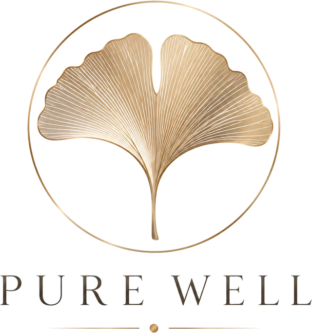
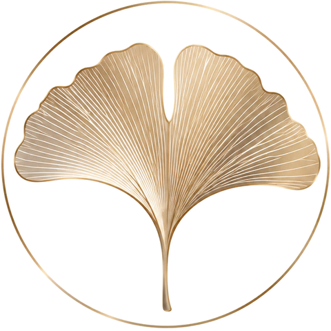

Cítit se dobře není luxus. Je to standard.
Hloubková práce s tělem, péče o nervový systém a podpora na cestě zotavení. Osm let individuální praxe – od sportovců a bojovníků až po lidi v nejtěžších obdobích svého života.
Tři oblasti, jeden přístup
Ať přicházíte kvůli přetíženým zádům, vyčerpanému nervovému systému, nebo kvůli životní křižovatce – vždycky pracuji s celým člověkem. Tělo, mysl i duše se navzájem ovlivňují, a proto je od sebe neoddělujeme.
Tělo
Odborná manuální práce a somatická péče. Masáže v El Guapo Fight Academy, Praha 3.
NejžádanějšíHloubková somatická masáž
Hlubší a déle trvající úleva od napětí, bolesti a ztuhlosti než po klasické sportovní či rekondiční masáži.
Somatic Recovery Care
Když napětí nesedí jen ve svalech. Trauma-informed péče pro hluboké zklidnění, ne jen chvilkovou úlevu.
VíceMysl
Podpora na cestě zotavení od někoho, kdo ji zná z vlastní zkušenosti.
Peer mentoring & koncept Panthera
Pro lidi po duševním onemocnění, krizi, vyhoření nebo traumatickém vztahu. Stabilizace, zotavení – a pro ty, kdo chtějí jít dál, Panthera.
VíceDuše
Prostor pro jasnost, sebereflexi a směr. Online.
Tarotový mentoring
Tarot ne jako věštba, ale jako zrcadlo. Z každého sezení si odnesete konkrétní vhled a kroky, ne předpověď.
VíceCo ode mě můžete čekat
Individuální praxe
Prvních pět let jsem masírovala na denní bázi. Byla to moje hlavní práce, ne činnost na okraj.
Ošetření
Řada stálých klientů ke mně chodí už od mých začátků v 18 letech.
Certifikátů
Sportovní vysoká škola VŠTVS Palestra a kurzy od masáží a trigger pointů po trenérství a peer konzultace.
S nervovým systémem, ne proti němu
Nejhlubší uvolnění přichází, když se tělo cítí v bezpečí. Proto netlačím silou proti jeho obraně.
Vlastní zkušenost
Vím, co znamená zotavovat se – z úzkostí, z nemoci i z prognózy, která nedávala šanci.
Lidské tělo je moje celoživotní fascinace
Jmenuji se Ivana Soukupová. S masážemi jsem začala v 18 letech a za osm let individuální praxe mi pod rukama prošli sportovci, bojovníci i lidé s náročným životem.
Na vlastní kůži jsem zažila, co dokáže práce s tělem a nervovým systémem – pomohla mi zotavit se i tam, kde lékaři už nedávali naději. Tahle zkušenost dnes prostupuje vším, co dělám.
Body · Mind · Spirit
Přístup, který stojí za vším, co dělám.
Tělo a mysl:
nejsou stroje na výkon. Kdo k nim tak dlouhodobě přistupuje, brzy řeší víc poruch než vytoužených úspěchů.
jsou propojené nádoby. Proto je potřeba pečovat o obě.
jsou jediný kus oblečení, který budeme nosit do konce života. Tak ať se nám v něm žije co nejlépe.

Proč list ginkga
Ginkgo biloba je jeden z nejstarších stromů na Zemi. Roste na planetě přes 200 milionů let a jednotlivé stromy se dožívají i více než tisíce let. Je symbolem trpělivosti, moudrosti a obnovy.
V Hirošimě přežilo několik ginkg atomový výbuch v roce 1945, přestože stála jen kilometr či dva od jeho středu. Brzy poté znovu vyrašila a rostou dodnes.
Jeho list připomíná dvě mozkové hemisféry a jméno biloba znamená „dvoulaločný“: dvě poloviny, které vyrůstají z jednoho stonku. Přesně tak vnímám tělo a mysl. A strom, který přežil nemožné a znovu vypučel, je pro mě obrazem toho, co je možné i u člověka.
Jak se ke mně dostat
Většina klientů ke mně přichází na doporučení. Napište mi, o kterou službu máte zájem, a domluvíme termín. Pokud si nejste jistí, co pro vás bude nejlepší, rádi to probereme.
- Telefon603 338 839 · SMS, WhatsApp
- Instagram@ivana.panthera
- MasážeEl Guapo Fight Academy
Na Rovnosti 2854/13A, Praha 3 - Mentoringpeer i tarot živě online